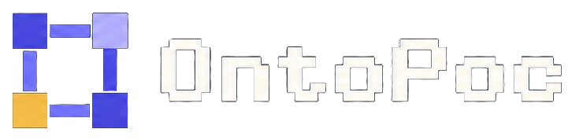

Ontology engineering
Turn business objects and relations into definitions you can check—not only a slide or a verbal agreement.

OntoPoc is an ontology engineering direction still in development: an LLM drafts objects, identity fields and relations from business tables or a document; code validates the draft against the data; a person confirms item by item. Main features are also available as ontology MCP tools and a Claude Code plugin.
Turn business objects and relations into definitions you can check—not only a slide or a verbal agreement.
Focus is the ontology (schema). OntoPoc is not a knowledge-graph platform and has no durable instance store.
Sort objects, identity fields and definitions the first time client data arrives; export forms, pipeline notes, OWL/SHACL.
32 MCP tools share the local modelling service with the UI. Claude Code plugin commands: build and review.
Start the local modelling service first, then connect a client. Commands match the repository README.
# Claude Code plugin claude plugin marketplace add Longado/ontopoc claude plugin install ontopoc@ontopoc # Or add as an MCP server (from the repo root) claude mcp add ontopoc -- env PYTHONPATH=$PWD/src python3 -m ontology_poc_generator.mcp_server
Tool list: docs/MCP.md. Plugin commands: /ontopoc:ontopoc-build, /ontopoc:ontopoc-review.
Writing checkable definitions for business objects, how they are identified, and allowed relations. OntoPoc drafts from tables or a document, validates with code, then lets a person confirm.
An ontology states the types and allowed relations; a knowledge graph usually also holds concrete instances and their links. OntoPoc focuses on the ontology side for one upload at a time.
A semantic layer often defines business meaning on a warehouse or metrics platform. OntoPoc sits earlier: first-pass object and definition work before platform import (import itself is not yet tested).
Calling ontology-related features through the Model Context Protocol. OntoPoc exposes 32 local MCP tools for Claude Code, Claude Desktop, Cursor and similar clients.
Early version. Tried on public and synthetic datasets only. No user outside the author has completed the full flow independently. UI exercised on macOS. Follow progress on @linyutai120479. Full Chinese / English docs live in the GitHub README.